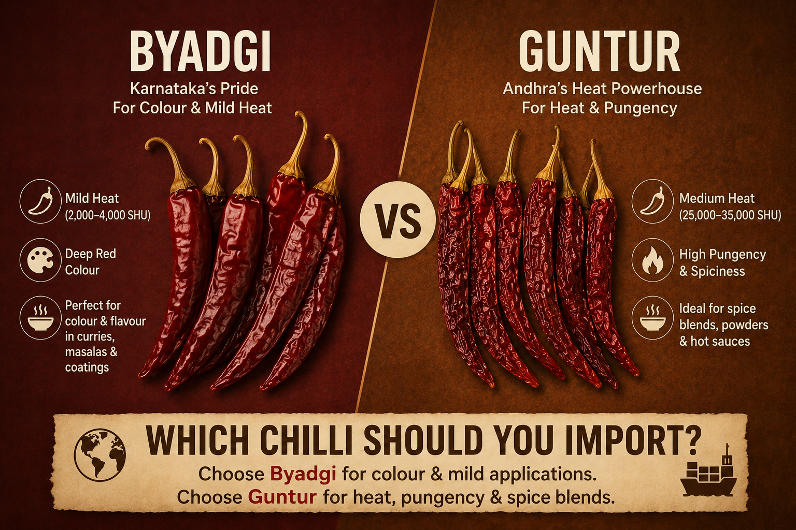

Guntur vs Byadgi: which chilli should you import?

Two chillies dominate India's export trade. Guntur Sannam and Byadgi Kaddi together account for the bulk of the dry red chilli leaving Indian ports. They look superficially similar — both deep red, both well-known to almost every Indian spice trader. But they are fundamentally different ingredients, and picking the wrong one for your market is one of the most expensive mistakes a first-time importer can make.
The 30-second answer
- Need heat at a fair price? → Guntur Sannam.
- Need deep red colour without the burn? → Byadgi Kaddi.
- Need both? → A blend of the two, weighted toward your end-use.
That's the headline. Now let's look at why.
Heat: a 4× difference
Guntur Sannam typically sits in the 35,000 to 40,000 SHU range — assertive but not blistering. Byadgi Kaddi by contrast measures only 8,000 to 15,000 SHU, roughly a quarter of the heat. If your end product is a curry powder or hot sauce that needs noticeable bite, Guntur is the natural pick. If your end product is a colour ingredient or a mild family-friendly retail pack, Byadgi.
Colour: the inverse story
Where Byadgi catches up, and overtakes, is colour. ASTA colour units (a standardised pigment measurement) for Guntur Sannam typically read 32 to 38. For top-grade Byadgi, they regularly read 100 to 160 — three to four times higher.
In practical terms: when a buyer says "I want a deep, almost bloody red curry without the consumer asking for water," they want Byadgi. When the recipe needs to lift off the plate with a vivid red oil sheen, they want Byadgi. This is why Byadgi is the variety of choice for oleoresin and natural-colour extraction, where the entire economics of the lot depend on pigment yield per kilogram.
Origin: different terroirs, different supply chains
Guntur Sannam, despite its name, is grown across a wide farm-belt of Andhra Pradesh and Telangana — including the Warangal, Khammam and Enkoor mandis where we source. Supply is plentiful, the auction system is mature, and price discovery happens daily.
Byadgi by contrast is concentrated in the Haveri and Dharwad regions of Karnataka. Volumes are smaller, the harvest window is tighter, and top ASTA grades clear early in the season. We source Byadgi through a partner network rather than direct mandi participation — a buyer who wants 40ft Byadgi containers in November typically needs to book by August.
Price band
Guntur Sannam is generally the cheaper of the two on a per-kilogram basis. Byadgi commands a premium that scales with ASTA grade — entry-grade Byadgi (ASTA 60–70) is closer to Guntur prices, while top-grade colour-extraction Byadgi (ASTA 130+) can trade at a multiple. The key for a buyer is being clear about which colour grade is required; "Byadgi" without an ASTA spec is an invitation to receive the lowest grade in the seller's stock.
Visual and physical differences
If you have samples of both in front of you:
- Guntur Sannam — long, slender, smoother skin, brighter red, 5–8 cm pods.
- Byadgi Kaddi — shorter and stockier, crinkled or wrinkled skin, deeper crimson sometimes leaning toward maroon, 6–9 cm pods.
The wrinkled skin of Byadgi is not a defect — it's the variety's signature, and a quick visual cue that you have the right lot.
End-use matrix
- Curry powder → Guntur (heat) + a touch of Byadgi (colour)
- Sambar / South Indian masalas → Byadgi-heavy blend
- Hot sauces → Guntur or Teja S17 if you need more heat
- Tandoori / restaurant retail → Kashmiri or Byadgi (low heat, high colour)
- Oleoresin extraction → Byadgi (pigment yield matters most)
- Pickle bases → Guntur or 334 (heat & cost balance)
The savviest first-time buyers we work with don't pick one — they book a 60/40 split on their first container and refine the ratio after their end-customer feedback.
One more thing: the spec sheet matters
Whichever you pick, ask for the spec in writing. SHU range, ASTA range, moisture maximum, broken percentage, foreign matter percentage, length range. If a supplier won't put numbers on paper, that's information about the supplier — not about the chilli.
Want our spec sheets for both Guntur Sannam and Byadgi? Drop us a line — we'll send a one-page PDF for each.